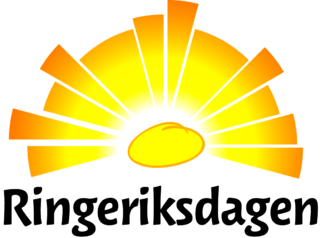

Arrangement
Ringeriksdagen

Det er igjen duket for Ringeriksdagen i Hønefoss sentrum og som flere år på rad skal Ringerike TKD ha stand. Datoen er 5. september og vi skal stå utenfor VIC Tronrud, der vi har stått flere ganger før.
Arrangementet foregår i tidsrommet 10:00 - 14:30 og standen må være bemannet hele dene tiden. Vi ønsker gjerne at flest mulig vil være med å vise seg frem for klubben, både med å bemanne stand, snakke med folk og gjerne være med på noen enkle oppvisninger. Mer informasjon fås på trenining, eller se Ringeriksdagens hjemmeside
Det er Anders og Reinhardt som har hovedansvaret for arrangementet.
Vi håper flest mulig vil være med å gjøre en liten innsats!
Kontaktinformasjon:
Anders:
anders.s.helmen@gmail.com
957 27 266
Reinhardt
r.skoien@hotmail.com
900 25 944